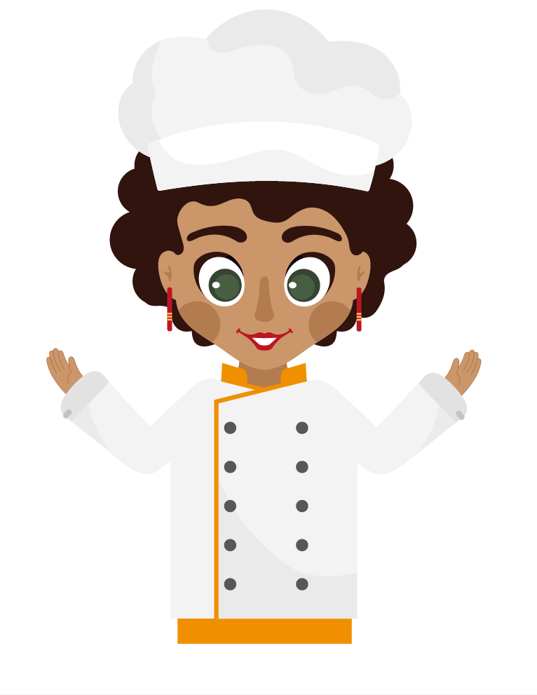

9. Read the text
The traditional chef’s uniform includes many parts. One of the most famous is the toque, the chef's hat which should be short, clean and cover the hair. Although, these days most chefs like covering the hair with a colored material called bandana. Another part of the uniform is the triangle. Its material is cotton, is around the neck like a scarf and absorbs sweat. Something really useful to give protection to the chef is the jacket, it is made of good quality white cotton, resists heat and washes easily. These jackets are double-breasted with plastic buttons, these don’t melt or drop into food. You can remove the jacket easily or reverse it if it gets dirty. Also, the uniform has wide roll-up sleeves that protect your arms from any kitchen danger. Besides, the chefs also wears an apron around the waist to protect them from top to the ankles; attached to the apron you have a torchon that is used to lift and move hot objects. Chefs wear trousers but some women prefer to wear skirts although they have to be fire-resistant. Too, chefs wear very comfortable and lightweight shoes with non-slip soles as they stand of feet the whole day. As a part of their business code, chefs put on a different uniform daily before starting to work.